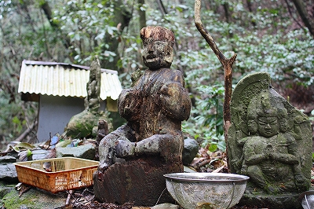

珍寺的篠栗霊場巡り
87番弘照院 & 番外霊場御手洗滝
珍寺的篠栗霊場巡り、最初の訪問地はのっけから申し訳ないが87番札所である弘照院である。
88番の内87番、つまりラス前である。
2時間ドラマでいえば真犯人が服毒自殺を図るか崖から落ちるかして、あとはエンディングテーマが流れるばかり、の状態である。
だって篠栗の一番手前にあるんだもん。手当たり次第トライアル巡礼スタイルだから仕方ないんですっ！
…で、弘照院である。
訪れた日は桜が散りはじめた時期。東京ではまだ咲き始めだというのにやはり九州は桜の開花が早いのだなあ、と妙に感心したりして。
地面はピンク色に染まり、ところどころに気まぐれな春の風の軌跡が記されていた。
さて。
弘照院訪問は後回しにしてその向かいにある御手洗滝へと通じる小道に向かってみる事にしよう。
御手洗滝は篠栗霊場の番外霊場である。
篠栗は山がちな土地であり、あちこちに滝がある。規模の大小こそあれ、多くの滝が修行場や霊場になっている。
ここ御手洗滝もそういった霊場のひとつだ。
ねじ式でお馴染みの漫画家つげ義春氏が篠栗を旅した際、この御手洗滝が一番印象的だ、と語っている。
つげ氏の堂守の婆さんが祈祷をしながら細々と暮らしている、というハナシに猛烈に惹きつけられた。
人里はなれた山中で祈祷をして暮らす、何とも浮世離れした暮らし向きではないか。果たして21世紀の現代にもそんな生き方が実践出来るのだろうか?是非確認してみたくなったのだ。
細い、細い小川伝いに上流を目指して歩く。朝っぱらからいきなりハードめなコースだ。
小さな石像が次々と現れる小道を遡上していく。

で、しばらく歩くと鬱蒼とした木々の間から御手洗滝が見えてくる。
小さな滝の周辺には不動明王の石像が点在している。
以前にも述べたが九州の不動サマはかなりの確立でバックファイアーが赤く塗られている。
苔むした岩に立つ不動明王像は背後が真っ赤に塗られ、深い緑の苔との対比が激しかった。
滝の脇には小さなお堂と建物があり、オバちゃんがいた。
お堂の中。窓からは滝が見える。
お茶を飲みながら話を伺う。
結局、祈祷を生業にしてここに住んでいるのかどうかは判らなかったが、雰囲気としてはごく普通のオバちゃんだった。
それにしても篠栗のレギュラー札所ならともかく控え組の番外霊場で、しかも山道を歩いて1キロ近く歩かなければならないこの霊場に一日何人の参詣者がやって来るのだろうか？浮世離れした場所なことは確実だ。
つげ氏が訪問してからおよそ40年後になる。この40年間、我々は何を得て何を失ったのだろう。
この山から一歩下りればごくごく普通にコンビニや郊外店がある普通の、ごく普通の郊外の街なのに。ここでは40年前、いやそれ以前から連綿と続いている時間が流れている。もちろん昔あったのはバラックのような粗末な小屋だったし、その前に立つ老婆は今はこの世におるまい。
でも滝の霊場にありがちな真言密教＆山岳信仰系の民間信仰の場が持つ暗く湿った独特の雰囲気は今も昔もあまり変らないように思える。
小さな祠の中に崩壊しかけた神仏が置かれていたりする。場所柄弘法大師と不動明王がメインだ。
水垢離をすることもあるのだろう。
そもそもどうやってこの大きな石像をこんな足場の悪い場所に設置したのか、謎だ。法力か？
で、また山道を歩いて弘照院に戻る。
浮世離れした場所にいただけに先ほど幻想的だった桜すらすでに俗っぽく見えてしまう。
と、赤い橋を渡ろうとしたら…
むむむ。
赤い橋の下に黄色いアーチの橋が架かりさらにその下にアーチが架かっている。
三重アーチの太鼓橋、ということになろうか。
しかも黄色いアーチの所には布団があって誰か寝てるぞ！
黄色いアーチの部分は実は反対側から歩いていけるようになっている。
近づいてみたら布団にいるのは石像でした。
石碑を見ると修行大師とある。
ああ、弘法サマが修行して橋の下に寝たという十夜ヶ橋の伝説を具体化したものね。確か橋の上で杖を突いちゃいけないんでしたね。
コレ、本家は愛媛県にあるのだが、こんなモノまで輸入してくるとは…しかも橋を重層化させてまで…恐れ入りました。
しかも単なるコンクリの橋の下にある本家の十夜ヶ橋よりも雰囲気いいですね。
とまあ、軽いジャブの応酬を経て篠栗の長〜い一日が始まるわけですよ。皆の衆、先々覚悟召されよ。
次の霊場にトライアル！
珍寺的篠栗霊場巡りTOPへ
珍寺大道場 HOME